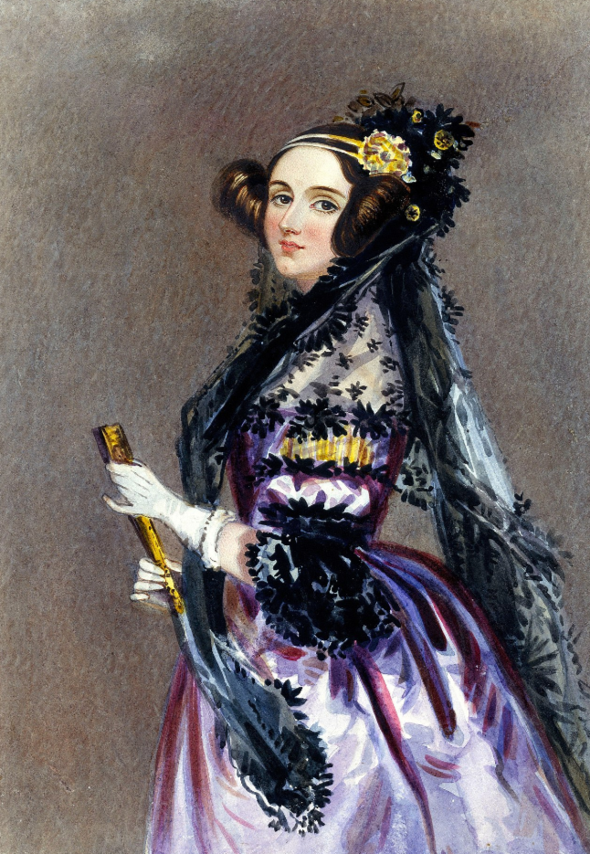

Ada Lovelace, mathématicienne britannique du XIXe siècle, est considérée comme la première programmeuse
de l'histoire pour avoir écrit le premier algorithme destiné à être exécuté par une machine, la machine
analytique de Charles Babbage, ce qui en fait une pionnière visionnaire de l'informatique moderne.
Le nom de l'école Ada Tech School s'inspire de cette mathématicienne.
En quelques points :